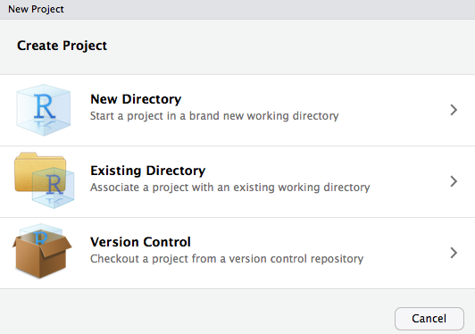
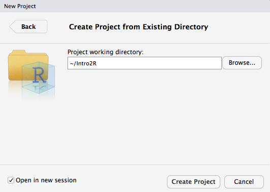

Chapter 1 Setup
You will get the most benefit from this Tutorial Series if you set it up as an RStudio Project and become familiar with the RStudio IDE.
1.1 Requirements
This series of tutorials on R can be run on the major computer platforms – Mac, Linux, and Windows.
The necessary files are available in a GitHub repository. To download and use them you will need these programs installed on your computer:
Once these are properly set up, you can proceed to Installation:
1.2 Quick Summary
The stages of installing this RStudio Project are:
- Install
randgiton your computer - Decide where to put the Project Directory
cdinto what will be its parent directory- Clone the project files from GitHub
- Install and open RStudio on your computer
- Create a new RStudio Project in the Project Directory
- Install and initialise
packrat - Set up an account on GitHub if you don’t have one
- Create a new repository in your GitHub account
- Add it to RStudio as a Github destination
- Push the files in your Project Directory to GitHub
- Continue to Part1 of your introduction to R
It may look intimidating, but it’s fairly easy to work through.
1.3 Installation Details
Carefully follow these instructions, in this order.
1.3.1 Create The Project Directory
In your Terminal program,
cdinto the directory where you want to create the new Project. This can be located wherever you want. It will be calledIntro2R, so there should not be an existing directory with the same name in that location.Enter the following commands one at a time at the command line in your Terminal program. Follow each line by a
RETURN:
git clone https://github.com/stuzog/Intro2R.git
cd Intro2R
ls -alYou should see a listing of the GitHub repository files (with your user name):
total 184
drwxr-xr-x 18 (username) staff 612 18 Apr 09:10 .
drwxr-xr-x@ 149 (username) staff 5066 18 Apr 09:10 ..
-rw-r--r-- 1 (username) staff 0 18 Apr 09:10 .Rhistory
-rw-r--r-- 1 (username) staff 117 18 Apr 09:10 .Rprofile
drwxr-xr-x 12 (username) staff 408 18 Apr 09:10 .git
-rw-r--r-- 1 (username) staff 26 18 Apr 09:10 .gitignore
-rw-r--r-- 1 (username) staff 536 18 Apr 09:10 How.Rmd
-rw-r--r-- 1 (username) staff 225 18 Apr 09:10 Intro2R.Rproj
-rw-r--r-- 1 (username) staff 18366 18 Apr 09:10 Part1_R_Data Science.Rmd
-rw-r--r-- 1 (username) staff 13654 18 Apr 09:10 Part2_R_Programming.Rmd
-rw-r--r-- 1 (username) staff 1360 18 Apr 09:10 README.md
-rw-r--r-- 1 (username) staff 12253 18 Apr 09:10 RStudio.Rmd
-rw-r--r-- 1 (username) staff 8000 18 Apr 09:10 RStudio_Ecosystem.Rmd
-rw-r--r-- 1 (username) staff 2071 18 Apr 09:10 R_Learning_Resources.Rmd
-rw-r--r-- 1 (username) staff 817 18 Apr 09:10 _site.yml
drwxr-xr-x 31 (username) staff 1054 18 Apr 09:10 images
-rw-r--r-- 1 (username) staff 1682 18 Apr 09:10 index.Rmd
-rw-r--r-- 1 (username) staff 687 18 Apr 09:10 intro.css1.3.2 Make It An RStudio Project
Launch RStudio on your computer. Unless you have used RStudio before, you will see a fairly unpopulated RStudio window.
Start a new RStudio project by clicking on
R Projectsin the upper-right corner of the RStudio window, or via the File > New Project… menu item. The Create New Project window will appear:

- Select Existing Directory and navigate to the newly-created
Intro2Rproject directory. Click Open in new session if you wish to preserve the current RStudio session.

- Click Create Project. You will see the following
ErrorandWarningmessages, which you can ignore for now. They will be corrected later in the setup.
Error in file(filename, "r", encoding = encoding) :
cannot open the connection
In addition: Warning message:
In file(filename, "r", encoding = encoding) :
cannot open file 'packrat/init.R': No such file or directory1.3.3 Install packrat
Because R packages are updated frequently, it is recommended that you use a project package management system. This project uses the packrat package dependency management system for R, so this should now be installed.
- In the Console window at the bottom left of the RStudio interface, enter the following commands followed by
RETURN, one at a time:
install.packages("packrat")
packrat::init()The Console will install packrat and the dependencies required for the project:
> install.packages("packrat")
Installing package into ‘/Users/(username)/Library/R/3.4/library’
(as ‘lib’ is unspecified)
trying URL 'https://cran.rstudio.com/bin/macosx/el-capitan/contrib/3.4/packrat_0.4.9-1.tgz'
Content type 'application/x-gzip' length 214137 bytes (209 KB)
==================================================
downloaded 209 KB
The downloaded binary packages are in
/var/folders/qt/6jh4c4yn5zdbf07t61nmz0_w0000gn/T//Rtmptyh6x4/downloaded_packages
> packrat::init()
Initializing packrat project in directory:
- "~/Intro2R"
Adding these packages to packrat:
_
Rcpp 0.12.16
backports 1.1.2
base64enc 0.1-3
digest 0.6.15
evaluate 0.10.1
glue 1.2.0
highr 0.6
htmltools 0.3.6
jsonlite 1.5
knitr 1.20
magrittr 1.5
markdown 0.8
mime 0.5
packrat 0.4.9-1
rmarkdown 1.9
rprojroot 1.3-2
stringi 1.1.7
stringr 1.3.0
yaml 2.1.18
Fetching sources for Rcpp (0.12.16) ... OK (CRAN current)
Fetching sources for backports (1.1.2) ... OK (CRAN current)
Fetching sources for base64enc (0.1-3) ... OK (CRAN current)
Fetching sources for digest (0.6.15) ... OK (CRAN current)
Fetching sources for evaluate (0.10.1) ... OK (CRAN current)
Fetching sources for glue (1.2.0) ... OK (CRAN current)
Fetching sources for highr (0.6) ... OK (CRAN current)
Fetching sources for htmltools (0.3.6) ... OK (CRAN current)
Fetching sources for jsonlite (1.5) ... OK (CRAN current)
Fetching sources for knitr (1.20) ... OK (CRAN current)
Fetching sources for magrittr (1.5) ... OK (CRAN current)
Fetching sources for markdown (0.8) ... OK (CRAN current)
Fetching sources for mime (0.5) ... OK (CRAN current)
Fetching sources for packrat (0.4.9-1) ... OK (CRAN current)
Fetching sources for rmarkdown (1.9) ... OK (CRAN current)
Fetching sources for rprojroot (1.3-2) ... OK (CRAN current)
Fetching sources for stringi (1.1.7) ... OK (CRAN current)
Fetching sources for stringr (1.3.0) ... OK (CRAN current)
Fetching sources for yaml (2.1.18) ... OK (CRAN current)
Snapshot written to '/Users/Stuart/Intro2R/packrat/packrat.lock'
Installing Rcpp (0.12.16) ...
OK (downloaded binary)
Installing backports (1.1.2) ...
OK (downloaded binary)
Installing base64enc (0.1-3) ...
OK (downloaded binary)
Installing digest (0.6.15) ...
OK (downloaded binary)
Installing glue (1.2.0) ...
OK (downloaded binary)
Installing highr (0.6) ...
OK (downloaded binary)
Installing jsonlite (1.5) ...
OK (downloaded binary)
Installing magrittr (1.5) ...
OK (downloaded binary)
Installing mime (0.5) ...
OK (downloaded binary)
Installing packrat (0.4.9-1) ...
OK (downloaded binary)
Installing stringi (1.1.7) ...
OK (downloaded binary)
Installing yaml (2.1.18) ...
OK (downloaded binary)
Installing rprojroot (1.3-2) ...
OK (downloaded binary)
Installing htmltools (0.3.6) ...
OK (downloaded binary)
Installing markdown (0.8) ...
OK (downloaded binary)
Installing stringr (1.3.0) ...
OK (downloaded binary)
Installing evaluate (0.10.1) ...
OK (downloaded binary)
Installing knitr (1.20) ...
OK (downloaded binary)
Installing rmarkdown (1.9) ...
OK (downloaded binary)
Initialization complete!
Restarting R session...
> - Click the Packages tab in the Files….Viewer pane (usually bottom right). It will now show a list of packages installed in the Project’s dedicated Packrat Library:

Above: All Project packages will be installed in this project-specific library.
- Click Update in the Packages tab toolbar to ensure that all project packages are current. Packages are updated frequently, so it is advisable to do this from time to time.
1.4 GitHub Version Control
It’s a really good idea to track your R coding with some form of version control.
RStudio makes this easy for you.
git and GitHub have become the leading version control system — there’s even a free eBook about git available for download . There also are some easy-to-understand explanations on how git works available on the Web.
git support is built-in to RStudio. This makes keeping track of your many ch-ch-ch-changes an integral part of your R programming workflow.
1.4.1 Setting Up git In RStudio
How you set up git in RStudio depends on whether you are:
- Starting a new Project:
- Adding
gitto an existing Project
Each alternative takes a slightly different path through the RStudio/GitHub maze. They are best detailed in Happy Git and GitHub for the useR by Jenny Bryan and the STAT 545 Teaching Assistants of UBC. RStudio’s version control guide also shows how to use git or an SVN repository for version control.
1.4.2 Using git In RStudio
When git is properly set up, a new Git tab will appear in the Environment… Build pane. Clicking on this tab will show files and directories that have changed since the last synchronisation with the GitHub repository associated with this Project. If you keep this tab open, you will see its contents change each time you save a file, or rebuild an entire Web site.
Above: The Git pane showing changes during work on this .Rmd file
The GitHub Push workflow is:
- Stage any modified file or directory
- Commit selected Staged files or directories, adding a brief Commit message
- Push all Committed files/directories to a GitHub repository.
If you’re new to git and somewhat intimidated by it, A Visual Introduction to Git gives an amusing introduction to the basic git workflow.
For a detailed overview from a developer perspective see Git and GitHub by Hadley Wickham. It particulaly refers to R package development.
1.4.2.1 Staging Changed Items
Click its Staged checkbox A small blue box appears in the left Status column, showing that the file or directory was Modified and ready for a Commit. If you had only added the file, a small green box will appear. The Staged checkbox then changes to a tickmark .
If you click on a listed directory, its contents will all appear, marked Staged and with small green boxes signifying that they have been Added.
Above: Staging a directory will result in its contents all being shown Staged.
- To Unstage added sub-directories or files you either deselect each individually then deselect the Staged parent directory (Tip: Start with the bottom one and keep clicking!), or
SHIFT Clickall of them and uncheck one Selected radio button.
1.4.2.2 Those little git icons?
In the Status column, you’ll see little yellow, blue, or red icons. They mean:
- New file or directory that does not exist in the git Repository
- Modified from what is in the git Repository
- Staging a file or adding it to be committed
- The item has been Deleted
The Status column has a left and right icon alignment:
icon on the left - the item has been Staged
icon on the right - the item is Not Staged
Sometimes you’ll see icons in both columns:
- Not in the Repository and has changed recently
- Staged and Modified since it was Staged
In the last case, the Staged checkbox will be filled with a solid blue .
You’ll see how it all works as you continue with RStudio.
1.4.2.3 Committing Staged Items
When you have Staged everything you want, the next step is to Commit those Staged items.
- Click the Commit button to do this. The Review Changes window appears. You can add a message to remind you (and others) what you have done in this Commit. This is always advisable, especially for others reviewing your repository.
Above: The RStudio Review Changes window with a Commit message.
A smaller Progress window will open over the Review window. It is actually a small Terminal window showing what you would see if you were at the command line.
Above: The Progress window shows the result of your Commit command.
1.4.2.4 Pushing To GitHub
- Your files are now Committed; the next step is to Push them to the Repository. The
green up-arrowis the Push button. You may have to close the Progress window first.
Above: The Push only happens when you click the green Push button.
- If everything went well, you will see the above message in the Progress window (opens automatically if you had closed it).
Above: After a successful Push, a second Push shows everything up-to-date.